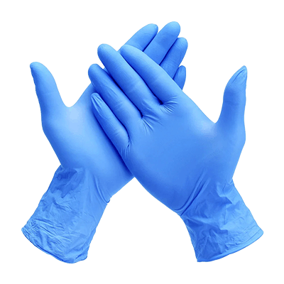
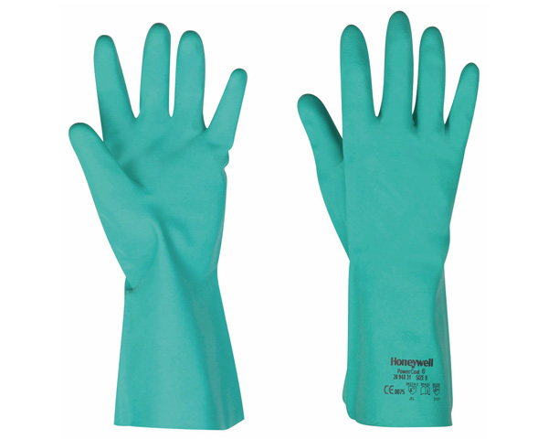
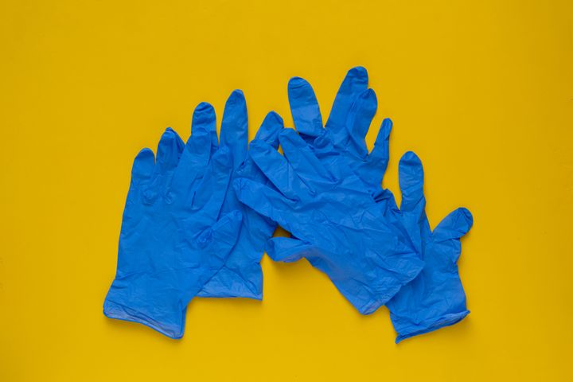
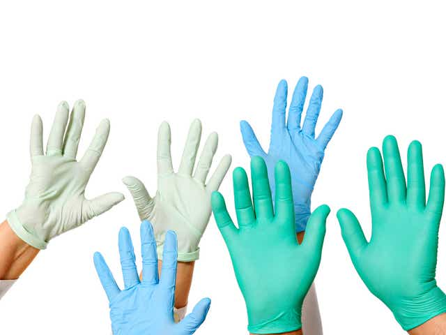

Medical gloves, as described by the World Health ORG, are examples of PPE that are used to protect the wearer and/or the patient from the spread of infection or illness during medical procedures and examinations and also at your residence.Medical gloves are one part of an infection-control strategy.When not providing direct care for a COVID-19 patient, the WHO cautions that washing your hands offers more protection against catching the coronavirus than wearing rubber gloves.It explains that COVID-19 can still be picked up on gloves and that this can be transferred to one's face.One must be cautious what they touch and where they touch.Gloves can be used at your residence to avoid spreading germs and bacteria.
*R15
*R20 FOR 1 (Longer and thicker)
*R15
Color Gloves
*R25
*R50 for 3
Disposable gloves are not intended to be washed like you would wash your hands. As the name suggests, as soon as they get dirty they should be thrown away and replaced. When working with dangerous things like viruses, we have specialized rules and training as to how we take the gloves off, how we dispose of them and when we must change them.
| Product | Size | Amount of Stcock | Product Info | Weight (grams) |
|---|---|---|---|---|
| Handgloves | ranges for all users | 994 pairs | The glove use is to protect yourself from anything dangerous I might be handling such as toxic chemicals, bacteria or even viruses.Disposable gloves are not intended to be washed like you would wash your hands. As the name suggests, as soon as they get dirty they should be thrown away and replaced. | 40g |
| Long handgloves | ranges for adult users | 559 pairs | These gloves are much more longer and they are thicker than the other type of prefered glove.They are more durable and can be used to clean tougher surfaces with germs and bacteria. | 110g |